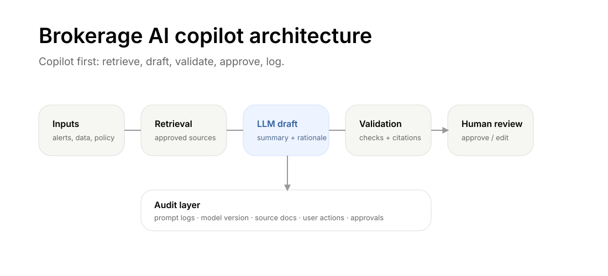

A Trader AI Stack
A practical personal AI stack for market research, risk checks, catalyst monitoring, and post-trade review without handing execution authority to the model.

A trader does not need to build a hedge-fund-grade autonomous agent to benefit from AI. The first useful trader AI stack is more controlled: organize information, monitor risk, summarize catalysts, challenge trade ideas, and keep a better journal.
The mistake is jumping straight to “AI that trades for me.” The better starting point is “AI that helps me think before I trade.”
The stack starts with attention, not execution
A practical trader AI stack has six modules.
Market monitor
This layer tracks watchlist symbols, futures contracts, macro events, earnings dates, volatility conditions, and unusual moves. It does not need to predict. It needs to surface what deserves attention.
News and filing summarizer
This layer summarizes headlines, filings, earnings calls, analyst notes, and market commentary. The output should separate facts from interpretation and highlight source links.
Position and risk dashboard
This layer translates holdings into exposure: direction, size, leverage, concentration, estimated P&L under stress, margin usage, and event sensitivity. For futures traders, this includes contract multiplier, notional exposure, margin requirement, and liquidation risk.
Trade journal
This layer records the reason for the trade before entry: thesis, catalyst, entry condition, risk limit, invalidation point, expected holding period, and post-trade review. AI can make this easier by asking the right questions.
Scenario generator
This layer asks: what happens if CPI surprises, rates move, liquidity disappears, the opening gap invalidates the setup, or correlated assets break their normal relationship?
Guardrail layer
This layer blocks or warns against trades that violate predefined limits: max loss, max leverage, no-trade windows, event risk, illiquidity, or revenge-trading behavior.
The safer work is research support
AI is useful when it summarizes news, extracts catalysts, compares bullish and bearish arguments, identifies hidden assumptions, explains risk metrics, organizes backtest results, and improves post-trade review. Those tasks make the trader more prepared without pretending the model has a validated edge.
It is less safe for making final trade calls. A language model can sound persuasive without having a validated edge.
Example: trading around a Fed decision
Suppose a trader wants to trade equity-index futures around a Federal Reserve decision. A useful AI workflow might look like this:
A useful workflow would summarize the event calendar and market consensus, compare similar historical events, identify the likely volatility window, estimate how much adverse movement would threaten the position, and force the trader to write the thesis before entry.
A dangerous workflow would ask the model whether to go long or short, let it place the trade, and increase size after a confident explanation.
The difference is control.
Build the first version without live execution
The first personal trader AI should not have trading permissions. It should read, summarize, calculate, and journal. Live execution should come much later, if ever, and only with strict limits.
A safe build order is boring on purpose: start with a knowledge assistant, then add a watchlist summarizer, a journal assistant, a risk calculator, a backtest helper, a paper-trading simulator, and only then an alert-only system. Limited automation with hard constraints comes last, if it comes at all.
Most traders never need step eight.
Bad data creates false confidence
A trader AI is only as good as its inputs. Bad data can create false confidence. Common problems include adjusted versus unadjusted prices, missing dividends, stale options chains, incorrect futures rolls, survivorship bias, look-ahead bias, and timezone mismatch.
Every backtest should make its data assumptions explicit. The trader needs to know the source, whether the data was available at the time of the decision, whether transaction costs are included, whether margin and leverage are included, whether stressed conditions are represented, and whether the idea survives across regimes.
AI can help check these questions, but it cannot repair bad data without controls.
For brokers, client-side AI changes the risk surface
Brokerages should assume clients will increasingly build personal AI tools. That changes the risk surface. Automated or semi-automated order flow can amplify market-impact risk, manipulation risk, margin risk, and suitability concerns.
Brokerages may need clearer API controls, tradeable-universe restrictions, rate limits, order throttles, education, and monitoring for AI-driven behavior. The point is not to ban trader AI. The point is to make sure automation does not create uncontrolled harm.
For traders, the tool should slow down bad decisions
The best personal AI is a discipline machine. It should slow down impulsive decisions, not accelerate them. It should ask whether the trade has a catalyst, edge, risk limit, and invalidation point. It should record why the trade was entered so the trader cannot rewrite history later.
If your AI only produces reasons to trade, it is not a risk assistant. It is a leverage amplifier.
For builders, default to transparency and control
Practitioners building trader tools should design for read-only data access first, minimal credential storage, explicit confirmation before actions, hard position limits, full logs, paper trading by default, clear disclosures, and explainable risk metrics.
The professional takeaway
The transferable pattern is the same across research and operations: summarize information, structure alternatives, expose assumptions, preserve logs, and keep humans responsible for final judgment.
Takeaway
The trader’s first AI should not be a robot trader. It should be a research assistant, risk coach, journal keeper, and scenario generator. The goal is not to outsource conviction. The goal is to make conviction more disciplined.